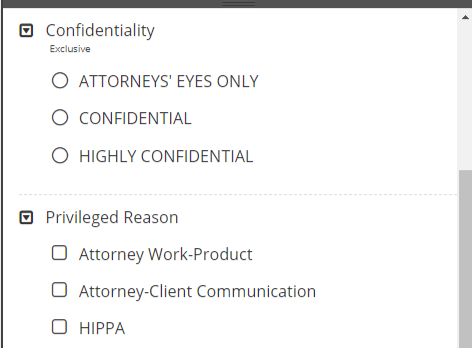

One of the primary activities when preparing documents for discovery is applying tags. A tag is a type of “marker” that allows you to categorize and identify specific document characteristics.
Typically defined by an administrator, tags allow
you and your organization to find and identify similar documents—for example,
those that are privileged in some way, or those requiring review by a topic
expert.
Administrators define each case to include document tags.

Tags allow you to work with documents that share similar characteristics or require similar attention. Following are some common uses of tags:
Define
a review pass based on a specific tag, see
Produce
a document set based on a tag, see
This procedure is covered in
Administrators can assign hotkeys to individual tags. After a hotkey has been assigned, reviewers working in the Document Viewer window can quickly apply a tag to a document by pressing the keys associated with that shortcut.
For instructions about how to assign a shortcut to a tag, see
Related Topics: